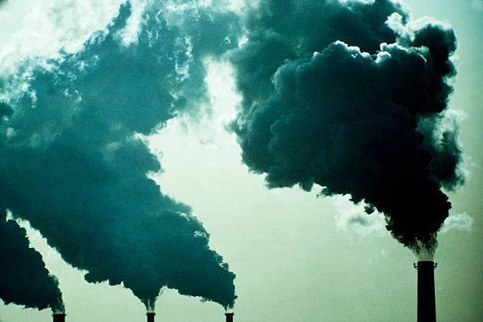

L'uomo esercita un'influenza crescente sul clima e sulla temperatura terrestre con l'uso di combustibili fossili,
la deforestazione e l'allevamento di bestiame.
Queste attività aggiungono enormi quantità di gas serra a quelle naturalmente presenti nell’atmosfera,
alimentando l’effetto serra e il riscaldamento globale.
Gas serra
La causa principale dei cambiamenti climatici è l'effetto serra. Alcuni gas presenti nell’atmosfera terrestre agiscono un po’
come il vetro di una serra: catturano il calore del sole impedendogli di ritornare nello spazio e provocando il riscaldamento globale
Molti di questi gas sono presenti in natura, ma l'attività dell'uomo aumenta le concentrazioni di alcuni di essi nell’atmosfera, in particolare:
l'anidride carbonica (CO2)
il metano
l'ossido di azoto
i gas fluorurati.
La CO2 prodotta dalle attività umane è il principale fattore del riscaldamento globale. Nel 2020 la concentrazione nell'atmosfera superava del 48% il livello preindustriale (prima del 1750).
Altri gas a effetto serra vengono emessi dall'attività umana in quantità inferiori. Il metano è un gas con un effetto serra più potente della CO2, ma ha una vita atmosferica più breve. L'ossido di azoto, come la CO2, è un gas a effetto serra longevo che si accumula nell'atmosfera per decenni e anche secoli.
Si stima che le cause naturali, come i cambiamenti della radiazione solare o dell'attività vulcanica, abbiano contribuito al riscaldamento totale in misura minore di 0,1ºC tra il 1890 e il 2010.

Cause dell’aumento delle emissioni
La combustione di carbone, petrolio e gas produce anidride carbonica e ossido di azoto.
L'abbattimento delle foreste (deforestazione) Gli alberi aiutano a regolare il clima assorbendo CO2 dall'atmosfera. Abbattendoli, quest'azione viene a mancare e la CO2 immagazzinata negli alberi viene rilasciata nell'atmosfera, alimentando in tal modo l'effetto serra.
Lo sviluppo dell’allevamento di bestiame. I bovini e gli ovini producono grandi quantità di metano durante il processo di digestione.
I fertilizzanti azotati producono emissioni di ossido di azoto
I gas fluorurati sono emessi da apparecchiature e prodotti che utilizzano tali gas. Queste emissioni causano un potente effetto serra, fino a 23 000 volte più forte dei quello provocato dalla CO2.
Riscaldamento globale
Il periodo 2011-2020 è stato il decennio più caldo mai registrato, con una temperatura media globale di 1,1ºC al di sopra dei livelli preindustriali nel 2019. Il riscaldamento globale indotto dall'uomo è attualmente in aumento a un ritmo di 0,2ºC per decennio.
Un aumento di 2ºC rispetto alla temperatura dell'epoca preindustriale è associato a gravi impatti negativi sull'ambiente naturale e sulla salute e il benessere umani, compreso un rischio molto più elevato di cambiamenti pericolosi e potenzialmente catastrofici nell'ambiente globale.
Per questo motivo la comunità internazionale ha riconosciuto la necessità di mantenere il riscaldamento ben al di sotto dei 2ºC e di proseguire gli sforzi per limitarlo a 1,5ºC.